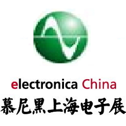
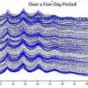
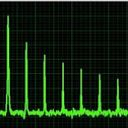

联系方式
姓名：邓小姐
电话：0755-2795 8860
手机：150 1298 1705
邮箱：sales@wiihey.com
地址：深圳市宝安区兴东社区69区
信义领御研发中心8栋1408
微信公众号
（微信搜索：wiihey）


{kind=link}
官方博客
威惠智能的博客关于我们
深圳威惠智能科技有限公司（以下简称威惠集团）成立于2008年，总部位于广东深圳，是一家聚焦于智能化领域的新技术企业集团，下辖上海威惠智能科技有限公司、深圳威惠智能科技有限公司、上海南升能源科技有限公司、深圳英卓易科技有限公司、云南威惠智能科技有限公司、香港维信技术有限公司、香港万芯国际贸易公司、Adverto Systems LLC(美国)等多家子公司。集团拥有强大的经营管理团队，团队成员具有超前的系统思维、先进的管理理念、丰富的项目经验，对智能化行业具有深入的洞察力。下属子公司具备一站式的智能化系统开发、生产、实施与服务能力，以及完整的智能化产品矩阵，是一个以融合性产业整合和创新性产品开发为支点的科技集团。
威惠集团致力于为客户提供基于传感器/物联网/云计算/人工智能技术的数据采集、传输、分析、展现等一站式智能化解决方案服务。服务范围包括了智能化总体方案的设计咨询、客户定制化产品开发、产品的生产制造、方案的落地实施、以及系统运营的持续支持。
威惠集团深入考察客户需求，根据客户的行业特色、独特优势和业务特征，针对性的设计智能化总体方案，帮助客户实现从传统经营模式到数据化经营模式的转变，全面拥抱智能时代。除了开发和部署传感器网络、数据管理平台等基础设施之外，威惠集团还帮助客户实现数据和业务的无缝对接，真正做到让数据成为推动业务的强大引擎。
团队介绍
梁金海/Andrew
总经理

Wallen Mphepö博士
首席科学家
（电子/光学研究员，IEEE评论员）
创始团队来自于……
- 高通：全球通信行业领军企业
- 美满：全球著名芯片公司
- 华阳：国内最早做工业监测企业
- 东华：首家A股上市的工业监测企业
- 紫光：全球第三大手机芯片企业
- 慧聪：内贸知名B2B电子商务运营商
历史沿革
威惠智能的创始人，梁金海先生，从上世纪90年代末开始创业历史，先后经历了PC时代、互联网时代和智能时代的三大发展阶段。
在PC时代，梁金海把握住了企业在信息化的过程中，对于计算机软硬件系统的需求，成功推出铁路客车检车员综合管理系统、智能巡检管理系统等一系列产品，获得“第一桶金”，详见附件表格。
2008-2012年间，经济危机的阴影笼罩许多行业，大量科技公司因为市场需求低迷陷入困顿甚至破产，但梁金海基于对多媒体技术/无线通信技术/云计算技术发展阶段的把握，认为这些新技术的结合将带来一批创新机会，于是在大环境低迷的情况下，梁金海大胆投资新产品开发，设立了深圳英卓易科技有限公司，推出以高端商用平板为代表的系列新品，并且成功将产品打向国际市场，客户包括ESSTEE LAUDER（雅诗兰黛）， VICHY（薇姿）， SAMSUNG（三星）， MONSTER， Skullcandy， Fitbit， GoPro， SONY， LEAPFROG， Fisher Price等国际一流企业。
2013-2014年，在国家双创口号的号召之下，由于对于智能硬件/O2O/互联网金融等新思路的盲目乐观，VC猛砸创业公司，但梁金海不为所动。
2015年，大批泡沫时期产生的科技创业公司关停，资本寒冬到来，科技创业进入低谷期，但梁金海反而认为市场经过初期的培育，对于智能化的理解进了一步，同时各方面相关技术也更加成熟，于是开始积极筹备新品研发。
2016年设立上海威惠智能科技有限公司，推出无人巡检等新颖的物联网产品，获得客户的积极反馈。
附录1： 部分早期产品列表
| 产品名称 | 功能简介 | 客户单位 |
|---|---|---|
| 铁路文件传输系统 | 用于铁路系统的各站段、段局之间的数据通信和文件的上报、下发。 | 哈尔滨铁路局 |
| 铁路客车检车员综合管理系统 | 对乘务员的出、退乘，是否酗酒，出勤情况进行如实准确的记载，形成统计分析报表，提供决策所需数据。 | 哈尔滨铁路局 |
| 数据迁移系统 | 将老版本(Oracle 6。0/SCO Unix)的数据迁移到新平台(Oracle 8。0/Windows NT) | 哈尔滨铁路局 |
| 网络状态监测系统 | 对网络中的主机、路由器、交换机的运行状态进行快速、准确地监测。 | 哈尔滨铁路局 |
| 电务段AM/FM/GIS系统 | 铁路行业各个部门拥有大量的线路和设备，相应的图纸、档案、说明等信息非常庞杂。本系统利用地理信息系统的技术优势，使管理人员能够全面地了解铁路网在某一地区的分布状况；使图形、数据管理与地理位置紧密联系；在设备采购、维修、维护、报废以及各管理部门之间共享信息，以便做出快速的、有效的决策。 | 哈尔滨铁路分局 三棵树电务段 |
| 满洲里商检局千兆城域网 | 该系统的设计目标是建立一个覆盖满洲里全市的、能将商检局原有网络高速互连的企业级城域网。系统采用Nortel BayStack ACCELAR 1200作为主干，BayStack 450作为边缘交换机，实现了高速数据访问，Web访问，视频监控，VOD等应用。 | 满洲里出入境检验检疫局 |
| 智能巡检管理系统 | 智能巡检系统是利用感应识别技术（RFID）开发的巡检员巡检资料收集、管理系统。该系统可以代替考勤钟、签到纸或签到牌，帮助管理人员掌握保安员、巡守员、值班员的准确作息时间与路线，以便于追查、考核及划清责任。 |
大庆输油管理处 哈尔滨机务段 绥化机务段 齐齐哈尔机务段 三棵树机务段 三棵树电务段 |
| 电信线路资源管理系统 | 对各通信站图纸资料管理，包括各局站的地理位置、所辖地区内的管道路由、管道断而及管孔占用情况、架空杆路路由、光电缆的路由及程式、交接（分线）设备的位置程式等。对线路资源资料的管理，包括管道、架空及直埋光缆的规格程式、电缆线序分配、光缆芯线分配、光缆接头盒及电缆接头位置、光缆终端设备配置以及通信电缆、光缆、交接（分线）设备、总配线架和光纤配线架的使用情况等。 | 大庆油田通信公司 |
| 发射机遥测及监控系统 | 该系统是为满足用户对于远端广播发射设备进行实时监测、控制的需求而建立的。通过该系统，用户可以随时读取各处设备的当前运行状态以及改变设备的运行参数。发射机通过背板的RS-232接口与控制计算机串口直接连接，控制计算机再通过广域网（可以是电话网或Internet）与远程主控计算机连接，从而完成整个控制过程所需要的网络连接。 | 哈尔滨广播器材有限责任公司 |
经营理念
威惠智能（及其前身）能够经历泡沫和危机的考验，在风云变幻的科技行业，多次踩中机会点，借力科技发展趋势，实现一次又一次的发展，与其科学理性的经营理念不无关系。
一、威惠智能不追求“风口”
在创投圈，风口是一个热门词汇，代表了机会。更有人用“风口上，猪也能飞起来”形容机会的重要性。但在威惠人看来，独立而深刻的趋势洞察，才是把握规律，驾驭趋势的关键所在。盲目追求“风口”，造成了大量的资金浪费和人才浪费，也让创业者错过了真正的机会，具有深远的危害。
二、威惠智能不热衷“炒作”
互联网在一些企业家看来，是一个炒作自己成为“网红”的机会。为了得到关注，有些人不惜放弃底线的进行“下三路”炒作。但威惠人认为，炒作只能获得一时关注，只能提高自身修养，以高超的设计能力和超预期的服务打动客户，才能得到长久的信任。互联网是最伟大的科技发明之一，不应用作炒作工具。
三、威惠智能不空谈“情怀”
企业是一个商业机构，其生存和发展必须建立在强劲的利润基础之上，某些企业家为了博得资本和市场的关注，大谈“情怀”。威惠人认为，企业家不是艺术家，企业家的任务是推出优秀产品，而不是表演节目，进行文化艺术创作。过度重视营销而不注意提升产品本身，是一种舍本逐末的行为，不可长久。
威惠智能不追求成为一家广为大众所知的“网红”企业。在十多年的发展历程中，许多知名企业被人们遗忘，而威惠智能却不断提升自己，通过推出越来越多的创新性产品，实现自己的社会价值。无论资本春天还是寒冬，经济上行还是下行，威惠人一如既往的，冷静而坚定的，把握属于自己的机会，持续前进。
最新动态
新闻热点
-

威惠智能亮相慕尼黑上海电子展
2017慕尼黑上海电子展，我们来了！
-
为什么无人巡检值得一干？
时代背景下，一线工人的职业前景在哪里？
-
我们为什么要做无人巡检？
威惠智能总经理，谈《无人巡检》。
专栏文章
-

机械振动那些事3——振动频谱分析
振动监测系列，通过傅里叶频谱变换分析设备的状态。
-

机械振动那些事2——振动的频率
振动监测系列，讲述振动和振动频率之间的关系。
-
机械振动那些事1——如何描述振动
振动监测系列，讲述描述机械振动特征的基本方法。
合作伙伴


总经理寄语
人类经过了机械化、电气化、信息化，正在昂首踏入智能化时代。
一、智能化战略，必须有一个具体而且可操作的落地点
许多企业面对智能化时代，规划宏大的蓝图，在落地实施的时候，却因为没有具体的落点而流于形式。也有企业盲目推行智能化，却迟迟看不到投资收益，往往半途而废，甚至失去信心。威惠人认为，智能化应大处着眼，小处着手，逐步推进。因此威惠会和客户在一起，经过深入细致的分析，不仅为客户制作出智能化方案的全景图，还找出眼前每个具体步骤的落地点，以及每一步的价值。
企业智能化的每个阶段，都应寻求某个方面具体的提升，并转化为效益，威惠坚信，只要理性的做好每一步，企业就能顺利进入智能时代，提前享受科技发展的红利，摆脱低层次竞争。
二、智能化实施，必须有一个能够持续提供全方位服务的供应商
企业的智能化升级，是一项复杂的系统工程，各个阶段，各个组件，都需要密切相互配合。整个供应链必须做到高度优化，配合默契，才能有效消除内耗。如果单一供应商不能提供完整解决方案，多个供应商难以密切配合，由此产生的附加成本将增加客户推进智能化的阻力。威惠是一个能够提供软件+硬件+整体方案咨询服务的综合性服务商，可以为客户提供智能化的全生命周期服务，保证客户以最优的成本，获得最佳的结果。
威惠人认为，智能化的挑战，就是威惠的机会。在产业智能化的过程中，威惠有信心用自己的优质服务，吸引并留住客户，和客户实现共同提升。
“我们要用产品改变世界”，是梁金海经常挂在嘴边的一句话，“当我们觉得有一个事不太合理，并且可以用计算机的方法把它变得更加合理的时候，我们就去干，然后把问题解决掉”。